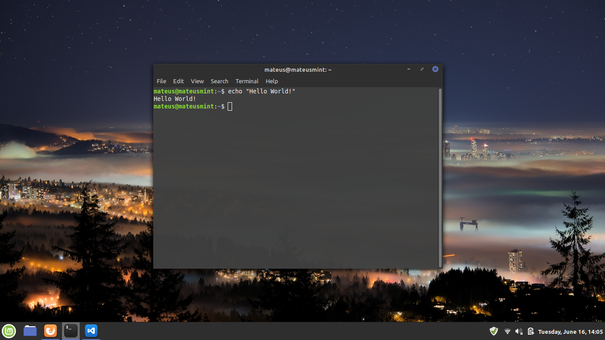

O Bash é um dos interpretadores de comandos Linux (bash --version). O interpretador de comandos tem função de interpretar comandos, juntamente com seus argumentos/parâmetros, executáveis localizados na pasta bin. Diferente do prompt do Windows, no Linux os comandos são externos, nos quais o interpretador tem a função de somente interpretá-los e executá-los. Todo comando é minúsculo (exceção de nome de arquivos e pastas). Todo comandos possui parâmetros ou argumentos, dos quais modificam a saída do comando, parâmetros são seguidos de 1 traço e letra ou 2 traços e palavra. Argumento não possui traços. (Ex: cd .. (cd comando, .. argumento)).
Sintaxe: comando -parametro argumento
No Linux tudo é arquivo, inclusive os diretórios(pastas). Um pendrive, quando plugado, torna-se um arquivo, salvo na pasta ‘device’, assim como o teclado.
Ex: ~/Downloads/Linux/linux.iso (o til representa a pasta de seu usuário)
Filme Star Wars modo Terminal: telnet towel.blinkenlights.nl
Fechar o bash: exit
Limpar bash: clear
Ajuda no bash: help
Ajuda com determinado comando: comando --help
Manual sobre determinado comando: man comando
Modo administrador: sudo + outros comandos
Modo root(Super admin(cuidado!)): sudo su
Mostrar caminho de pastas à partir da raíz: pwd
Caminho relativo: ./pasta/pasta/arquivo.tipo
Historico dos comandos executados: history
Repetir comando x do history: !34 (executará o comando 34 do history)
Criar pasta: mkdir nomepasta1 nomepasta2 nomepasta3
Criar pasta com subpasta: mkdir -p pasta1/pasta2/pasta\ 3/ (o ‘\ ’ representa não interpretar o próximo espaço em branco como um comando, pode-se trocar o nome do arquivo com espaços por seu nome por extenso entre aspas duplas)
Criar arquivo: touch nomearquivo.tipo
Comando mais direto: touch Documents/Cursos/Linux/Modulo\ 1/aula1.txt
Editar arquivo com o editor bash ‘nano’: nano nomearquivo.tipo
(Comandos nano: ‘cntrl+o(salvar)’, ‘cntrl+x(sair)‘)
Remover pasta/arquivo(cuidado): rm nomepasta/ (‘rm’ remove definitivamente, não move à lixeira)
Remover arquivox na pasta Documents: rm Documents/arquivox
Remover pasta: rmdir nomepasta/
Remover pasta com conteúdo dentro: rm -rf nomepasta
Remover sob confirmação: rm -i nomepasta
Remover sob confirmação com mais de 4 arquivos: rm -I (i maiúsculo)(-r apaga recursivamente, f forçar)
// Durabilidade somente enquanto o terminal estiver aberto
Mostrar todos os apelidos: alias
Criar apelido: alias rm=”rm -I” (agora todo o comando ‘rm’ será, na verdade, ‘rm -I’)
Listar conteúdos dentro da pasta atual: ls
Listar pastas e subpastas: ls -R
Listar conteúdos dentro da pasta atual com informações: ls -l
Listar conteúdos com informações aprimoradas de armazenamento: ls -l -h
Listar com arquivos ocultos: ls -a
Listar com informações incluindo armazenamento e arquivos ocultos e subpastas: ls -Rlah (tipo do arquivo: d(diretório), arquivo comum(-), dispositivo de bloco(b), de caracteres(c), link(l))
Listar conteúdo de arquivo: cat nomearquivo.tipo
Listar conteúdo de arquivo de trás pra frente: tac nomearquivo.tipo
Listar conteúdo de arquivo com paginação: less /etc/services (Less: ‘n’ pula pra próxima página, ‘/palavra’ procura palavra)
Listar conteúdo de pasta: ls nomepasta/
cd (change directory)
Entrar em pasta na pasta atual: cd nomepasta/
Entrar em arquivo na pasta atual: cd arquivo.tipo
Entrar na pasta x: cd ~/pastax/
Voltar 1 pasta da pasta atual(diretório pai): cd ..
Voltar 2 pastas da pasta atual: cd ../../ (e assim por diante)
Voltar à pasta de seu usuário(~): cd ou cd ~
Volta à pasta raíz: cd / (Na pasta raíz tem-se o acesso de todo o sistema)
* Referência a conjunto de caracteres (presente no prompt do Windows)
? Referência a apenas 1 caractere (presente no prompt do Windows)
[ ] Referência de faixa de caracteres
{ } Referência a padrões de caracteres
Obs: Há diferença entre maiúsculas e minúsculas
Listar tudo que começa com ‘x’: ls /etc/x*
Listar tudo que tem ‘x’ no meio: ls /etc/*x*
Listar tudo que termina com ‘.conf’: ls /etc/*.conf
Listar tudo que tem 2º caractere ‘a’, 3º ‘s’, e depois qualquer coisa: ls /etc/?as*
Listar tudo que tem ‘a’ na 4ª posição e depois qualquer coisa: ls /etc/???a*
Listar tudo que começa com ‘f’, seguido de caractere na faixa entre ‘a’ e ‘i’, e depois qualquer coisa: ls /etc/f[a-i]*
Listar tudo que começa com ‘f’, seguido de caractere ‘a’ ou ‘c’, depois qualquer coisa: ls /etc/f[a,c]*
Listar tudo que começa com ‘f’, seguido de caractere entre ‘a’ até c, ou ‘e’, depois qualquer coisa: ls /etc/f[a-c,e]*
Listar tudo que tenha no meio caracteres de ‘a’ até ‘c’, depois qualquer coisa: ls /etc/*[a-c]*
Listar tudo que, por 2º, liste ou ‘am’ ou(OR) ‘ul’, depois qualquer coisa: ls /etc/?{am,ul}*
Lista tudo que, por 2º, liste sequência do ‘a’ até ‘m’ ou do ‘u’ até ‘l’ (não é necessário o traço ‘-’), depois qualquer coisa: ls /etc/?[am,ul]*
Listar tudo que termina com ou ‘tab’ ou ‘swd’: ls /etc/*{tab,swd}
Copiar e colar arquivo: cp nomearquivo.tipo Pastadestino/ (no modo gráfico basta segurar o cntrl e mover o arquivo para o destino)
Mover arquivo: mv nomearquivo.tipo Pastadestino/
Renomear arquivo: mv pastaantiga/ Pastanova/
Copiar e colar tudo com final ‘.conf’ para dentro de uma pasta: cp /etc/*.conf Pastadestino/
Procurar pacotes apt para instalação: sudo apt search
Pacote com apt: sudo apt install nomearquivo
Pacote .deb: sudo dpkg -i nomearquivo.deb
Pacote .run: sudo chmod +x nomearquivo.run && sudo ./nomearquivo.run
Pacote .tar: sudo tar -xvf nomearquivo.tar
Pacote .tar.gz: sudo tar -zxvf nomearquivo.tar.gz
Pacote .tar.bz2/.xz: sudo tar -jxvf nomearquivo.tar.bz2
(Softwares compactados geralmente possuem um arquivo de instruções de instalação, juntamente com um arquivo ‘.configure’, do qual terá de ser executado(./configure), após realizar o ‘make’ do software, ‘make clean’ e, após isso, montar o programa ‘make install’ usando ‘sudo’)
Remover ‘lixo’: sudo apt autoremove //ou apt clean
Reconstruir dependências faltando/corrompidas: sudo apt --fix-broken install
Desinstalar somente software: sudo apt remove nomesoftware
Desinstalar software e bibliotecas (cuidado!): sudo apt-get purge nomesoftware //ou sudo apt-get purge --auto-remove nomesoftware
Atualizar bibliotecas: sudo apt-get update
Atualizar programas: sudo apt-get upgrade
Atualizar bibliotecas e programas(comando único): sudo apt-get update && sudo apt-get upgrade
Atualizar distro e programas: sudo apt-get dist-upgrade
r - read(leitura)
w - write(gravação)
x - exec(execução)
0 Corresponde ao “-rwx” Nenhuma permissão
1 Corresponde ao "x" Execução
2 Corresponde ao "w" Escrita
3 Corresponde ao "wx" Escrita e execução
4 Corresponde ao "r" Leitura
5 Corresponde ao "rx" Leitura e execução
6 Corresponde ao "rw” Leitura e escrita
7 Corresponde ao "rwx" Leitura, escrita e execução (Cuidado!)
-R Permissão recursiva (afeta todos arquivo e subpastas) à listada. (Ex: sudo chmod -R 777 arquivo)
Ex1: sudo chmod 764 teste (Da direita pra esquerda, permissão à outros usuários(4) com somente leitura, grupo(6) com leitura e gravação e dono(7) com leitura, gravação e execução)
Ex2: sudo chmod 40 teste (Da direita pra esquerda, permissão à outros usuários(0) nenhuma, grupo(4) somente leitura e dono não foi modificada)